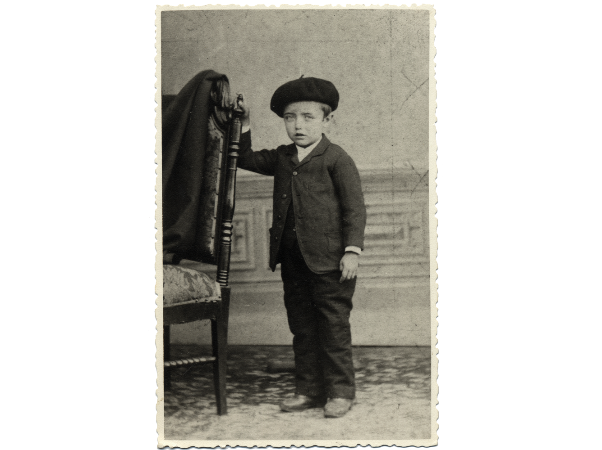
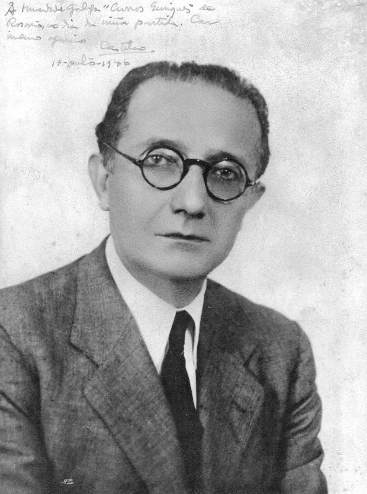

A vida de Castelao
Un percorrido pola súa vida e traxectoria
Primeiros anos
Castelao foi nado o 29 de xaneiro de 1886 en Rianxo, sendo o primeiro fillo de Mariano Rodríguez, mariñeiro de profesión, e de Joaquina Castelao Gemme.
Foi bautizado na igrexa de Santa Comba, o 30 de xaneiro de 1886, e recibiu o nome de Alfonso Daniel Rodríguez Castelao, por vontade do crego encargado do bautizo, ao naceren no mesmo ano que o futuro rei Alfonso XIII.
Aos tres meses do seu nacemento, o pai emigrou a Arxentina, onde instalou unha pulpería, polo que Daniel foi criado especialmente polos seus avós maternos.
Sendo cativo foi veciño dos Dieste e amigo de Eduardo, irmán do futuro escritor Rafael Dieste, autor de grandes obras como "A fiestra valdeira" e "Viaxe e fin de don Frontán" (publicado de forma póstuma en 1982).
A finais de 1895, Daniel e máis a súa nai emigraron a Bernasconi, na pampa Arxentina, para vivir co pai. "Tiña eu once anos cando meu pai, que estaba a vivir na Arxentina, nos chamou cabo de si; e alá fomos embarcados miña nai e mais eu nun paquete alemán".
Mentres a familia vivía na Arxentina, naceron as súas irmás: Josefina (1897-1974) e Teresa (1898-2000).
Sería neses anos de residencia na Arxentina nos que Daniel descubriu o valor da caricatura lendo "Caras y Caretas", onde Xosé María Cao Luaces publicaba as súas caricaturas.
No ano de 1900, a familia regresou a Galicia para que Daniel estudase medicina en Compostela. Foi nestas datas cando comezaría a tomar clases de debuxo de María Dios Rivademar, no Caramiñal. Posteriormente, o pai marcharía de novo a Arxentina, para regresar definitivamente a Galicia cos cartos que acumulara alá, mellorando a situación económica da familia.

Estudos
De 1900 a 1903, Castelao estudou o bacharelato de artes no Instituto Xeral e Técnico. En 1901 matriculouse tamén na Escola Elemental de Artes e Industrias de Compostela. Entre 1903 e 1909 cursou a carreira de medicina na Universidade de Santiago de Compostela.
Nestes anos de universidade agromara o seu interese polo debuxo e a pintura, especialmente pola caricatura e a música. En 1908 expuxo os seus debuxos en Madrid e comezou a colaborar coa revista viguesa "Vida Gallega". Entre 1909 e 1910 fixo un curso de doutoramento en Madrid, aínda que regresou sen lograr o doutoramento.
Vida persoal
O 19 de outubro de 1912 casou con Virxinia Pereira Renda (1884-1969), na antiga igrexa de San Paio da Estrada.
O primeiro de febreiro de 1914 naceu na Estrada o seu único fillo, Alfonso Xesús de Braga.
En decembro de 1915 marcha a Madrid para opositar a funcionario do Instituto Xeográfico Estatístico, á vez que aproveita para participar nunha exposición de humoristas e na Exposición de Belas Artes de Madrid, na que obtivo grandes recoñecementos. Aprobada a oposición, comeza a traballar como auxiliar de Estatística en Pontevedra a principios de 1916, onde residiría ata o seu exilio en 1936.
Nese mesmo ano de 1916 participa como figurante no filme Miss Ledyia, rodado en Pontevedra por José Gil y Gil. No ano de 1918 volve opositar para mellorar a praza de funcionario, á vez que comeza a traballar como profesor adxunto da cátedra de Debuxo, no instituto de segunda ensinanza de Pontevedra, onde coñece a Antón Losada Diéguez, catedrático de Psicoloxía, Lóxica e Ética. Fíxose cargo da cátedra de Debuxo, por baixa do titular, durante quince meses.
Na cidade pontevedresa comezaría a colaborar cos intelectuais locais e participar en diversas actividades culturais. Máis tarde, en 1927, participará como membro fundador do Museo de Pontevedra.
Compromiso político
Coa proclamación da Segunda República en 1931, Castelao intensificou a súa actividade política. Foi elixido deputado nas Cortes republicanas e participou na creación do Partido Galeguista, defendendo a identidade cultural de Galicia e o seu dereito ao autogoberno. Un dos seus principais obxectivos foi conseguir un Estatuto de Autonomía para Galicia, que sería aprobado nun referendo o 28 de xuño de 1936.
A Guerra Civil e o exilio
O golpe militar de xullo de 1936 sorprendeu a Castelao en Madrid, onde se atopaba traballando pola aprobación do Estatuto galego. Durante a Guerra Civil defendeu a República e denunciou a violencia e a represión a través dos seus debuxos e escritos. Ao rematar a guerra en 1939, viuse obrigado a permanecer no exilio, primeiro en Estados Unidos e posteriormente en Bos Aires, Arxentina.
Desde Bos Aires continuou traballando pola defensa da cultura galega e do autogoberno de Galicia. En 1944 fundou o Consello de Galiza e publicou Sempre en Galiza, unha das súas obras políticas máis importantes. En 1946 foi nomeado ministro do Goberno da República no exilio. Finalmente, faleceu en Bos Aires o 7 de xaneiro de 1950, sen poder regresar á súa terra.
